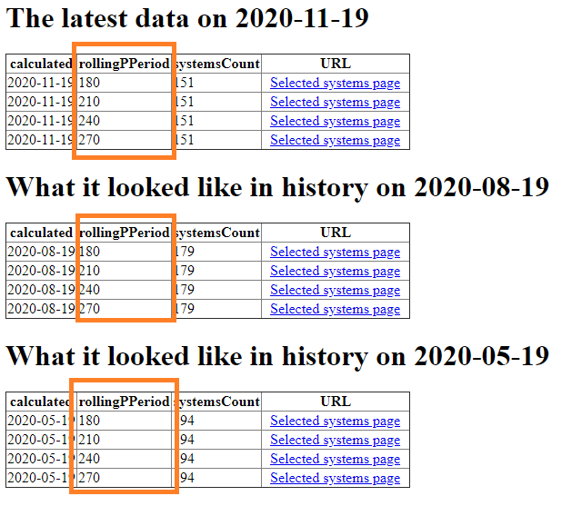
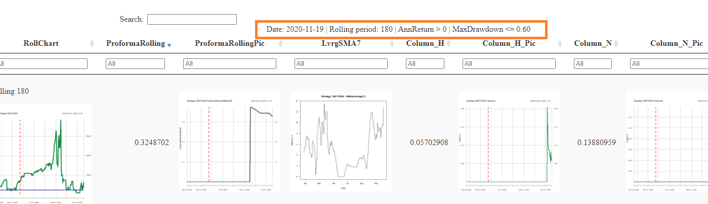
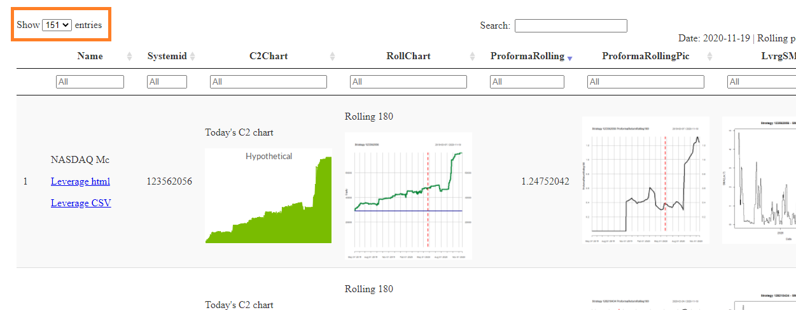
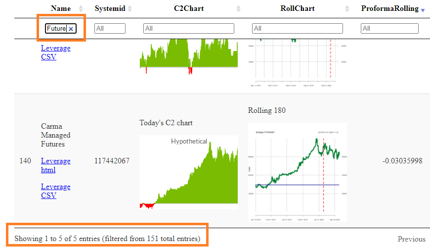
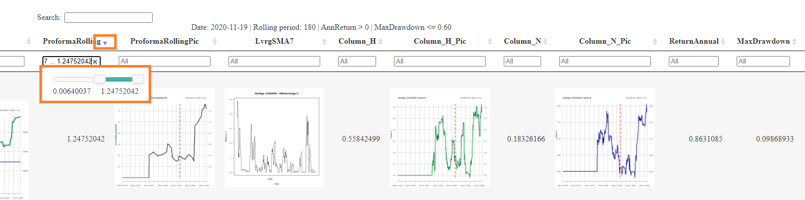
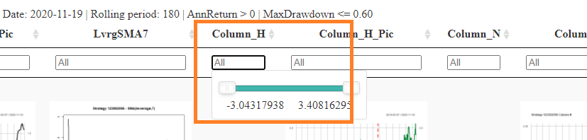
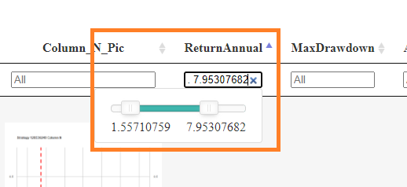
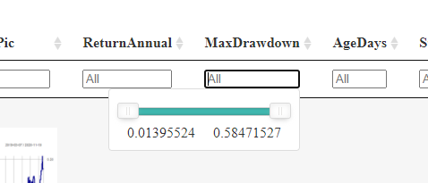
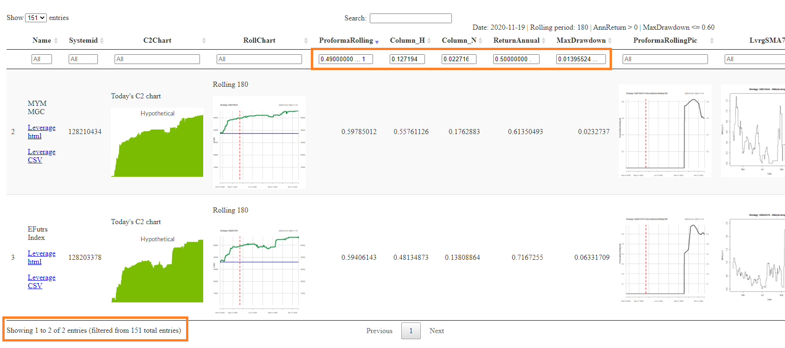

All requested periods are available from the main page:

The calculated period is printed in the page together with the basic systems selection:

Each page contains information about a number of visible systems.
For example: The following page contains 151 systems:

Columns have filters.
Say we enter a text "Future" to the "Name" column. A number of filtered systems can be found on the bottom of the page then:

All calculated columns have filters. It is possible to specify a range of values for the specific column. Each column can be also sorted ascending or descending.




All filters can be set simultaneously. This is the way you can find the right parameters combination for the desired system selection.
